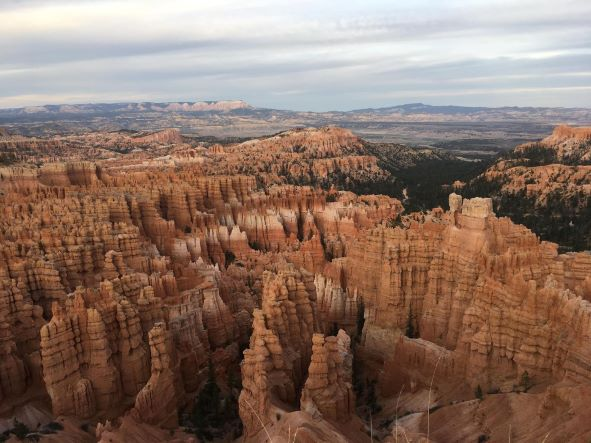

Module 2.1
My First Page

Bryce Canyon
The pros and cons of going to Bryce Canyon National Park
Pros
- 1. Natural Beauty
- 2. Unique Rock Formations
- 3. Good Variety of Paths and Trails
Cons
- 1. Remote Location
- 2. Cost of Lodging (if not camping)
- 3. Wide Temperature Variations